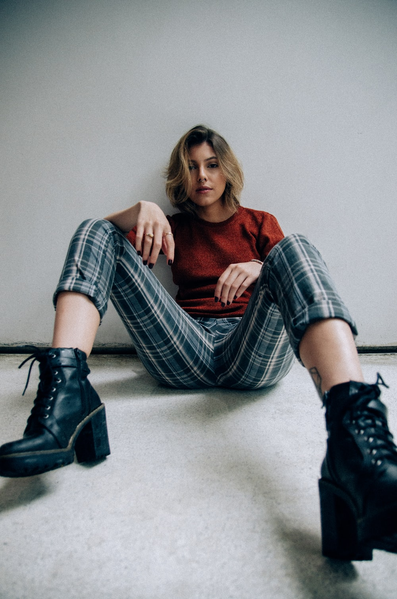
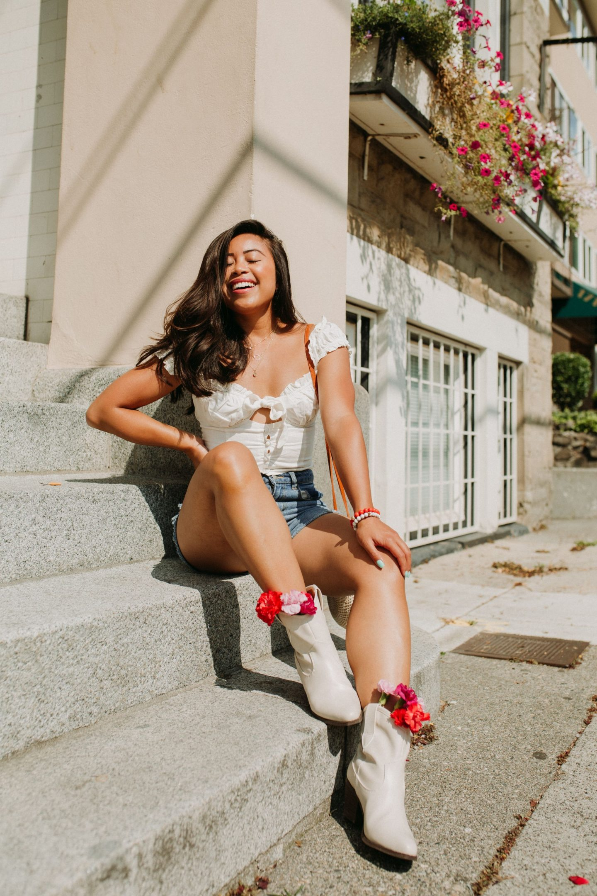

Basic POsing Guides
Seated Poses
The first step to showcasing someone’s personality is the posing.

Seated Pose
A lot can be said with a seated pose. This pose can be strong and distinguished or it can communicate relaxation or vulnerability. A seated pose can be as versatile, if not more so, than a standing pose.

Sit on the floor
Gorgeous and easy pose for a model sitting on the ground.Try different directions and angles, for example, move gradually around the model or change the shooting point’s height. Sitting positions are not limited to casual shots. Don’t be afraid to try some sitting poses also for more formal shots.

Sit on a elevated surface
With the model sitting, you can use different angles and heights to get different looks. If the model is a tad overweight then focus more on the above type of angle where she looks up at the camera, as this will be slimming.
Always make sure that your female model’s modesty is maintained.Whilst the model is seated, she can play with a flower or piece of jewelry which will lend itself to many different photographic options from full body, to half body to macro detail shots. Create different shapes with arms and legs.